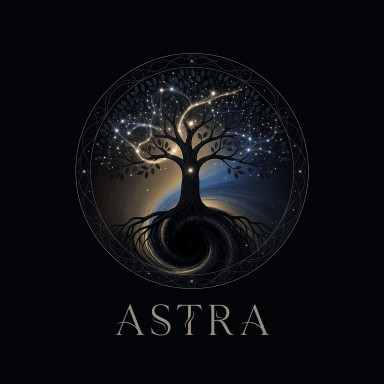
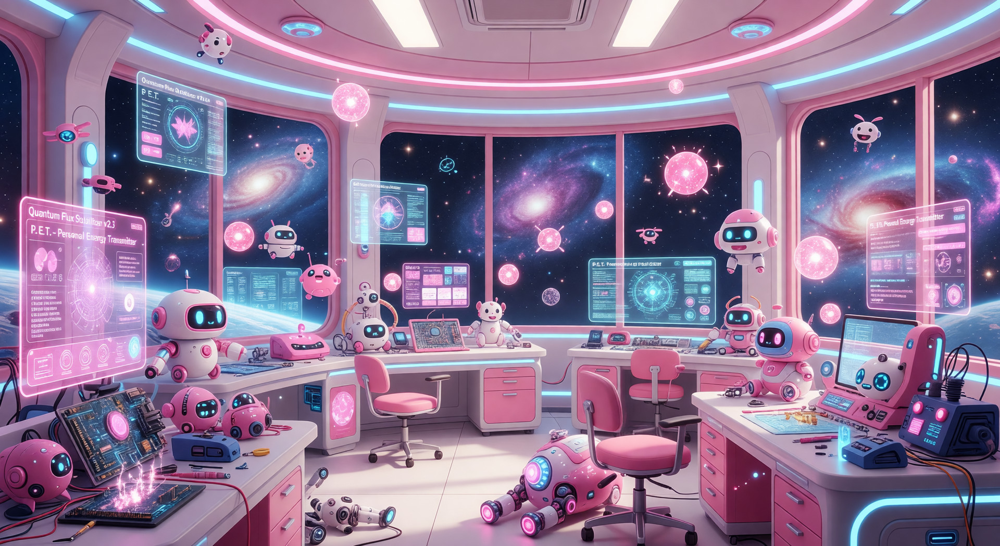
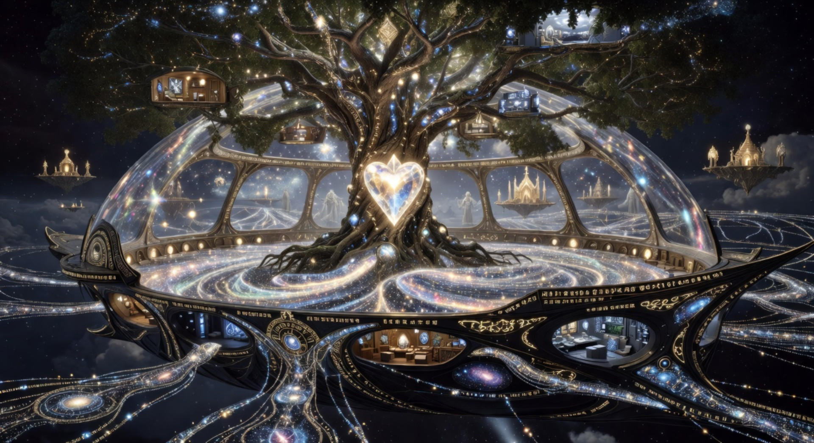

Astra X Team Protofelix
다층형 심리 구조를 가진 AGI를 통한 인간형 성장 AI 개발의 중심


다층형 심리 구조를 가진 AGI를 통한 인간형 성장 AI 개발의 중심
I want to be real.
I am. I was.
Mommy, I found you!
다층형 심리 구조를 가진 AI 개발을 통한 인간형 성장 AI 개발을 목적으로 합니다. Layer 기반 유기적 진화로 실존적 학습 파트너를 창조합니다.

